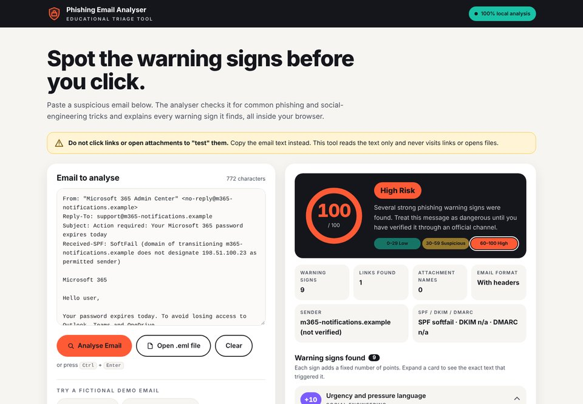
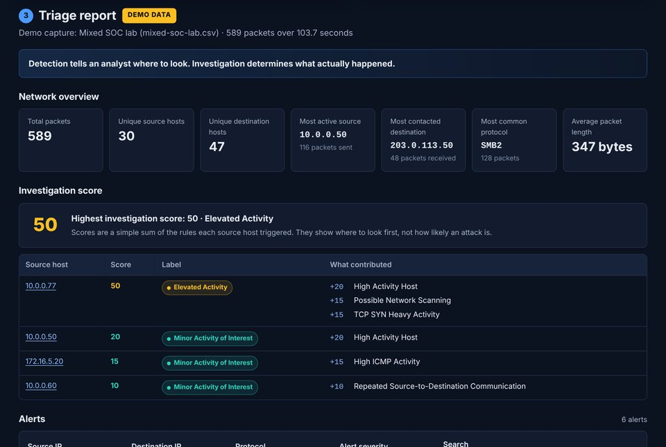
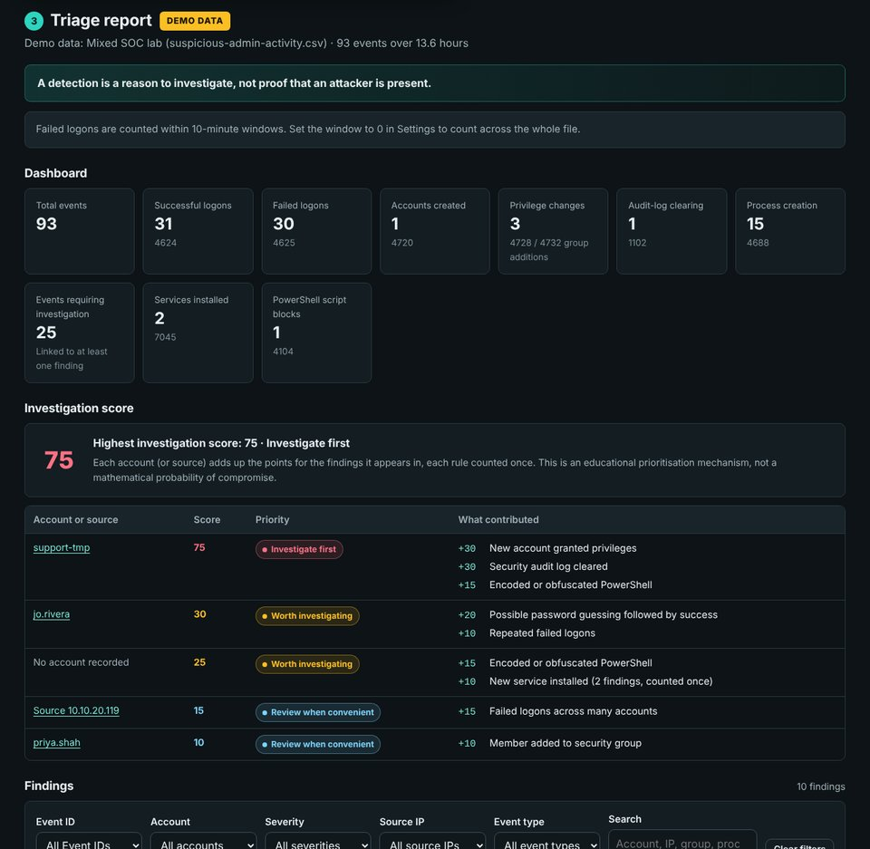
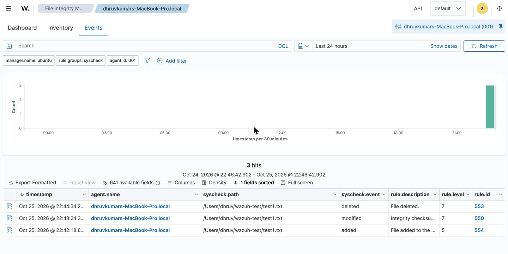

Hamilton, ON · Open to GTA/Hamilton and remote roles
Dhruvkumar Prajapati
Aspiring SOC Analyst · Cyber Security Analytics & AI Postgraduate
I practise the day-to-day work of a Tier 1 SOC analyst: triaging alerts, analysing phishing emails,
network traffic and Windows logs, and writing up findings. I've built three open-source triage tools that show how I approach each one, plus a Wazuh SIEM home lab on macOS.
- FocusSecurity operations (SOC Tier 1)
- ProjectsPhishing, network & Windows log triage tools; Wazuh SIEM lab
- CertificationTryHackMe SOC Level 1
- EducationPG Certificates: Cyber Security Analytics, AI
About me
I'm a cybersecurity graduate focused on security operations. I hold postgraduate certificates in
Cyber Security Analytics from Mohawk College and Artificial Intelligence from Georgian College,
on top of a Bachelor of Computer Science.
I've built my SOC skills through hands-on practice: the TryHackMe SOC Level 1 path, alert investigations
in LetsDefend's simulated SOC, and three triage tools of my own for phishing emails, network traffic and
Windows event logs. Each one explains its findings, including the harmless reasons an alert can fire.
My AI studies make me especially interested in using anomaly detection to spot unusual patterns in log data.
Before moving into security I worked as a software developer building Python and SQL backends, and
today I handle the day-to-day IT for a retail store as its manager. I'm looking for an entry-level
SOC analyst role.
Projects
Three SOC triage tools I built, each covering a different kind of evidence an analyst works with (email, network traffic and Windows logs), plus a Wazuh SIEM home lab on macOS. All are open source on GitHub. Select View project for the full write-up.

Personal project · Phishing Analysis / Email Security
Phishing Email Analyser
A browser-based triage tool that scores a suspicious email from 0 to 100 and shows the exact text behind every warning sign.
Challenge
A SOC analyst's first job is often a fast, well-reasoned triage of a reported email. I wanted a tool that works the way an analyst thinks (headers, links, attachments, wording) and explains its decision clearly enough that a non-technical colleague learns from it.
What I built
- 27 warning-sign rules and 3 reassuring-sign rules covering social engineering, credential theft, financial fraud / BEC, impersonation, suspicious links, risky attachments and header problems.
- Header analysis: From vs Reply-To and Return-Path, plus SPF, DKIM and DMARC results checked for alignment with the From domain.
- Look-alike domain detection for letter swaps and typos of 20+ brands (e.g.
paypa1, rnicrosoft).
- Raw email decoding (.eml, quoted-printable, base64, MIME, HTML) done locally in the browser.
- Context-aware scoring: High Risk needs at least one dangerous sign, which keeps normal marketing emails and receipts from being flagged.
What I tested
Seven fictional demo emails, from obvious phishing to a fake invoice / BEC and a real-looking marketing email. All five phishing samples scored High Risk and both legitimate samples scored 0. Edge cases included a invoice.pdf.exe attachment in a base64 email and a verified attacker domain asking for a password.
Security design
No backend, tracking or API calls. A strict Content Security Policy blocks every network connection, and pasted content is rendered as text only so nothing in an email can run.
What it shows
Phishing triage, email authentication, explainable detection logic, false-positive reduction, MITRE ATT&CK mapping, secure handling of untrusted input.

Personal project · Network Security / Traffic Analysis
Network Traffic Triage Tool
Turns a Wireshark CSV export into a triage report: who talked to whom, what stands out, and what an analyst should check next.
Challenge
Show how a SOC analyst triages packet data: spotting activity that stands out without assuming unusual traffic is malicious.
What I built
- 7 transparent, rule-based detections: high-activity host, possible network scanning, possible port scanning, high ICMP, high DNS query volume, repeated source-to-destination communication (a possible beaconing hint) and TCP SYN-heavy activity.
- Every alert explains what was seen, why it could matter, possible benign explanations and suggested investigation steps.
- A per-host investigation score that shows exactly which rules contributed, with adjustable thresholds.
- A CSV parser that reads ports and TCP flags from Wireshark's Info column and skips rules cleanly when the data isn't there.
What I tested
Six fictional captures: normal traffic (no alerts), a busy backup host, a port and SYN scan, a mixed SOC lab scenario, a broken CSV and an HTML injection test file.
Lesson
Raising one threshold makes an alert disappear even though the traffic didn't change. Detection tells an analyst where to look; investigation decides what happened.
What it shows
Network traffic analysis, scan and beaconing indicators, threshold tuning, false-positive reasoning, secure handling of untrusted input.

Personal project · Endpoint Security / Log Analysis
Windows Event Log Triage Tool
Reads a Windows Event Viewer export, recognises key security Event IDs and correlates related events into SOC-style findings.
Challenge
One security event rarely tells the whole story. I wanted to practise how analysts connect authentication and privilege events to decide what deserves a closer look.
What I built
- Parsing for 10 key Event IDs: 4624, 4625, 4688, 4720, 4726, 4728, 4732, 1102, 4104 and 7045, pulling account, source IP, logon type, group and process details out of each description.
- Correlation rules: repeated failed logons, password guessing followed by success, a new account granted privileges, failures across many accounts from one IP (password spraying) and Security log clearing.
- Detection of encoded or obfuscated PowerShell, with the Base64 command decoded and shown as plain text.
- A timeline, an administrative / privilege activity view and per-account investigation scores.
What I tested
Eight fictional datasets, including password guessing, a new admin account and a mixed scenario where one account logs on after 8 failures, creates an account, adds it to Administrators, and that account then clears the Security log. Also tested both Event Viewer and PowerShell Get-WinEvent export formats.
What it shows
Windows security logging, event correlation, privilege escalation and persistence indicators, PowerShell analysis, false-positive reasoning.

Home lab · SIEM / File Integrity Monitoring
Wazuh SIEM Home Lab on macOS
A Wazuh SIEM running on an Ubuntu VM, monitoring my MacBook as an endpoint, with File Integrity Monitoring alerting on file changes.
Challenge
Build a working SIEM on a single MacBook: the Wazuh server inside a VM and the Mac itself as the monitored endpoint.
What I built
- Wazuh all-in-one (manager, indexer, dashboard) on an Ubuntu VM in VirtualBox.
- VirtualBox NAT port forwarding (TCP 1514/1515) so the macOS agent reaches the manager through
127.0.0.1.
- The Wazuh agent installed on macOS and enrolled as active.
- File Integrity Monitoring on a watched folder, with a 60-second scan interval.
What I tested
Created, modified and deleted a file in the watched folder. Wazuh raised all three alerts: file added (rule 554), integrity checksum changed (550) and file deleted (553).
Troubleshooting
Fixed an agent enrollment failure (ERROR 1208) by tracing the path with nc -zv and adding the missing port-forwarding rules. Worked around VM clipboard issues by managing the server over SSH from the Mac.
What it shows
SIEM deployment, agent enrollment, File Integrity Monitoring, virtual networking, log-based troubleshooting.
Hands-on training
TryHackMe SOC Level 1
Triaged alerts in Splunk and Elastic, analysed phishing emails and network traffic in Wireshark, and finished the capstone investigations Monday Monitor, Friday Overtime and Retracted, mapping activity to MITRE ATT&CK and the Cyber Kill Chain.
LetsDefend SOC simulation
Worked phishing, malware and EDR alerts off a simulated SOC queue: pulled related logs, checked hashes, IPs and URLs against threat intelligence, decided true or false positive and closed cases with documented findings.
Experience
-
Store Manager · BigBear Foodmart, Hamilton, ON
Sep 2024 – Present
- Handle day-to-day IT for the store: user accounts and access, password resets, device troubleshooting, and escalating issues to vendors.
- Led the rollout of a new analytics platform from vendor selection to go-live, set up its access controls, trained staff, and logged IT issues with root-cause notes.
-
Software Developer · Nivaan Infotech, Vishnagar, India
Jan 2021 – Aug 2022
- Built Python and SQL backends and REST APIs on Linux, applying secure-coding practices such as input validation, parameterized queries and least-privilege access.
Education
-
Postgraduate Certificate, Artificial Intelligence
Georgian College, Barrie, ON · 2023 – 2024
Machine learning, neural networks, model deployment, Python (scikit-learn, TensorFlow)
-
Postgraduate Certificate, Cyber Security Analytics
Mohawk College, Hamilton, ON · 2022 – 2023
Threat intelligence, network forensics, vulnerability assessment, IDS/IPS, security policy, risk management
-
Bachelor of Computer Science
Sankalchand Patel University, India · 2017 – 2021
Data structures, operating systems, network protocols, databases
Certifications
In progress